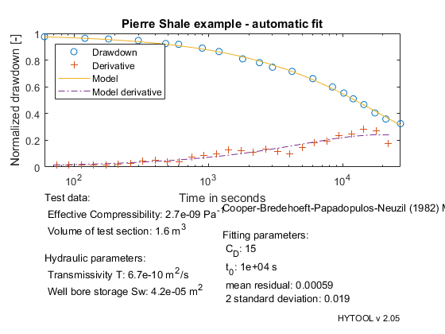
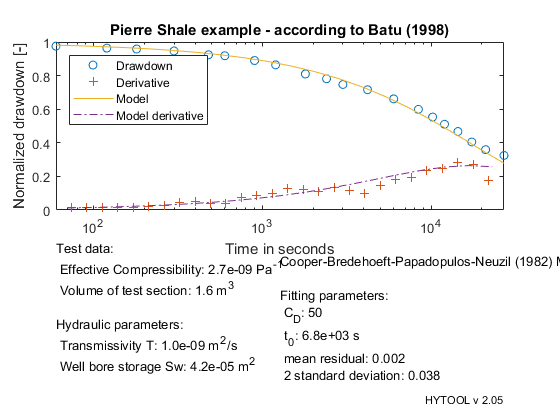

Shut-in slug test (pulse)
This demonstrates the interpretation of a pulse test with the Neuzil (1982) solution
MIT License Copyright (c) 2017 Philippe Renard - University of Neuchâtel (CHYN)
The data set for this example comes from the following reference: Batu, V., Aquifer Hydraulics: A Comprehensive Guide to Hydrogeologic Data Analysis, John Wiley, New York, 1998. Example 13-2, Pages 689-692 Example adapted from Neuzil (1982)
Let us first load the data and plot them.
[t,s]=ldf('nsl_ds1.dat');
| HYTOOL Demo |
We then define the values of the parameters that are required for the interpretation:
rw represents the radius of the well Ceff the effective compressibility Vs the volume of the tested section
rw=0.067; % Radius of the well in m Ceff=2.723e-09; % effective compressibility in Pa-1 Vs=1.59; % vol. of the test section in m3
Once the data have been loaded and the parameter defined, we can interpret the data. We do that as usually in two steps. First the parameters p of the model are estimated with the function nsl_gss. Then the non linear least squares nsl_fit is used to find an optimum fit.
p=nsl_gss(t,s);
p=fit('nsl',p,t,s);
Norm of Norm of
Iteration SSE Gradient Step
-----------------------------------------------------------
0 0.00407344
1 0.00327813 0.0008202 880.701
2 0.00273153 0.000537422 610.557
3 0.00252769 0.0016573 1682.97
4 0.00181657 0.000243911 352.667
5 0.00178408 4.68995e-06 24.7885
6 0.00178406 1.56456e-09 3.24334
7 0.00178406 4.06155e-09 2.61771
8 0.00178406 4.44948e-10 0.98257
9 0.00178406 1.85727e-07 0.000320935
Iterations terminated: relative change in SSE less than OPTIONS.TolFun
We can then display the result of the interpretation. Hytool find that the folowing values for the transmissivity and storativity:
T = 6.7 e-10 m2/s and S = 1.0 e-4
figure(1)
nsl_rpt(p,t,s,[Ceff,Vs,rw],'Pierre Shale example - automatic fit');
 The results are in reasonable agreement with the values found by Batu (1998): T = 1.0 e-9 m2/s and S = 3.0 e-5
In order to compare the fits between the two solutions, we compute the fitting parameter values Cd and t0 from the values of T and S provided by Batu and plot the solution.
cd = 50; t0 = 6750;
nsl_rpt([cd,t0],t,s,[Ceff,Vs,rw],'Pierre Shale example - according to Batu (1998)');
 We then find that the fits are rather similar and both acceptable.